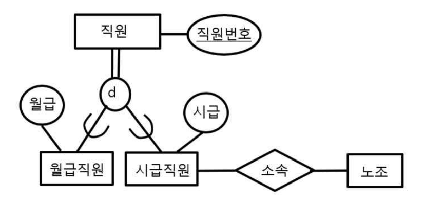
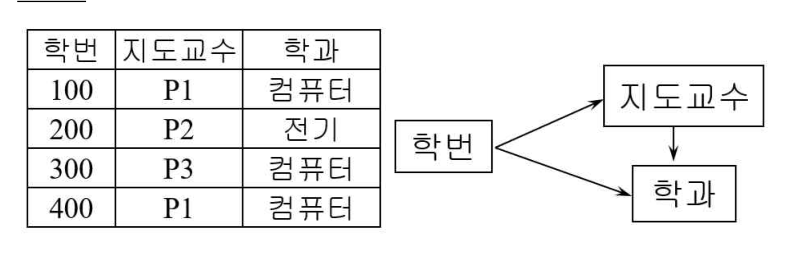
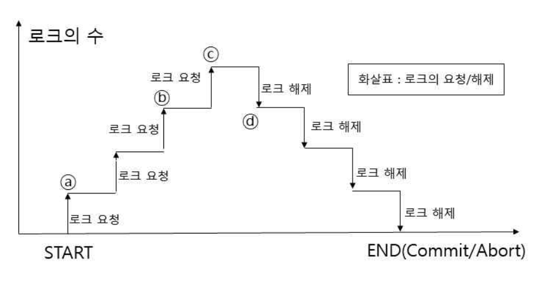
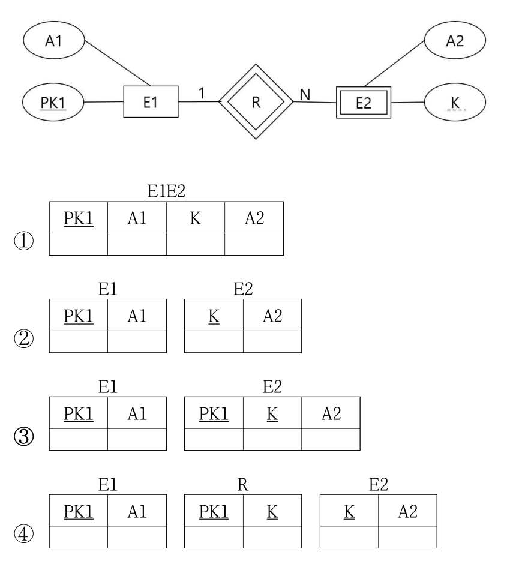

작성 기준: 데이터베이스 강의자료 우선 근거, 표준 이론(관계모델·SQL·정규화·트랜잭션·인덱스·분산DB) 보조 활용
정답 출처: 2026년(제27회) 정보시스템 감리사 필기시험 문제 및 답안.pdf (원본 Bold 표시 + 문항별 논리 검증)
정답 신뢰도: 매우 높음 (25문항 전량 페이지 이미지 육안 대조 + 계산·SQL·관계대수 로직 재검증)
검증 특이사항: 코드블록형 문항(Q57)·복수보기형(Q58)은 자동 잉크판별이 부정확하여 원문 이미지와 논리로 재검증하여 확정함(Q57=①, Q58=②).
| 번호 | 정답 | 번호 | 정답 | 번호 | 정답 |
|---|---|---|---|---|---|
| 51 | ③ | 60 | ② | 69 | ③ |
| 52 | ④ | 61 | ③ | 70 | ③ |
| 53 | ② | 62 | ② | 71 | ② |
| 54 | ④ | 63 | ② | 72 | ④ |
| 55 | ③ | 64 | ② | 73 | ① |
| 56 | ① | 65 | ③ | 74 | ④ |
| 57 | ① | 66 | ② | 75 | ③ |
| 58 | ② | 67 | ② | ||
| 59 | ① | 68 | ④ |
JDBC 환경에서 자바 응용 프로그램이 데이터베이스에 연결되어 SQL을 수행하는 과정의 처리 순서로 올바른 것은?
① 나 → 다 → 라 → 마 → 가
② 다 → 라 → 가 → 나 → 마
③ 다 → 나 → 라 → 마 → 가
④ 다 → 라 → 마 → 나 → 가
정답 : ③번
정답 신뢰도 : 매우 높음 (원본 이미지 Bold 확인)
| 항목 | 내용 |
|---|---|
| 연도 | 2026년 (제27회) |
| 과목 | 데이터베이스 |
| 문항번호 | 51번 |
| 난이도 | 중 |
| 출제주제 | JDBC 처리 순서 |
| 연도 | 문항번호 | 핵심개념 |
|---|---|---|
| 2004~2025 기출 교차분석 | - | 동일 개념 반복 출제(향후 전체 연도 해설집 완성 시 문항번호 갱신) |
★★★ 보통(JDBC)
JDBC 처리 흐름은 다음과 같다.
1. 다: 응용이 DriverManager.getConnection() 호출
2. 나: 등록된 드라이버 중 적합한 드라이버 선택·연결 위임
3. 라: 드라이버가 DBMS와 네트워크 소켓 연결 설정
4. 마: Statement/PreparedStatement 객체 생성
5. 가: SQL 실행
따라서 다 → 나 → 라 → 마 → 가인 ③이 정답이다.
JDBC 흐름은 응용이 getConnection()을 호출(다)하면 DriverManager가 적합한 드라이버를 선택·위임(나)하고, 드라이버가 DBMS와 소켓 연결을 설정(라)한 뒤 Statement/PreparedStatement를 생성(마)하여 SQL을 실행(가)한다. 따라서 다-나-라-마-가인 ③이 정답이다.
getConnection 호출(다)보다 드라이버 선택(나)을 먼저 둘 수 없다. 연결 요청이 선행한다.
연결 설정(라) 후 곧바로 실행(가)으로 갈 수 없다. Statement 생성(마)이 실행 전에 있어야 한다.
소켓 연결(라) 후 Statement(마)를 생성했는데 드라이버 선택(나)이 뒤에 오는 것은 순서가 맞지 않는다.
JDBC 6단계: 드라이버 로딩 → Connection 획득(getConnection) → Statement 생성 → SQL 실행(executeQuery/Update) → ResultSet 처리 → 자원 반납(close).
JDBC 6단계: 드라이버 로딩→Connection 획득(getConnection)→Statement 생성→SQL 실행(executeQuery/Update)→ResultSet 처리→자원 반납(close).
Statement 종류: Statement(정적), PreparedStatement(파라미터 바인딩·SQL Injection 방지·성능), CallableStatement(저장 프로시저).
Connection Pool: 연결 생성 비용을 줄이기 위해 커넥션을 재사용(DBCP·HikariCP).
JDBC로 DB 연결 시 드라이버 로딩→getConnection→Statement 생성→실행→결과 처리→자원 반납 순으로 개발한다.
getConnection이 드라이버 선택·소켓 연결을 촉발하는 흐름 이해.
참조하는 테이블을 EMP, 참조되는 테이블을 DEPT라 할 때 참조 무결성 제약조건을 보장하기 위해 사용하는 ‘ON DELETE RESTRICT’에 대한 설명으로 가장 적절한 것은?
① 삭제된 기본키 값을 참조하는 EMP 테이블의 외래키에 널 값을 채운다.
② EMP 테이블에서 이 값을 참조하는 모든 투플도 연쇄적으로 삭제된다.
③ 참조하는 모든 투플의 애트리뷰트가 디폴트 값이 명시된 경우 디폴트 값을 갖는다.
④ DEPT 테이블에서 어떤 투플을 삭제하려는데, 이 투플의 기본키 값을 참조하고 있는 투플이 EMP 테이블에 존재하면 삭제 연산을 거절한다.
정답 : ④번
정답 신뢰도 : 매우 높음 (원본 이미지 Bold 확인)
| 항목 | 내용 |
|---|---|
| 연도 | 2026년 (제27회) |
| 과목 | 데이터베이스 |
| 문항번호 | 52번 |
| 난이도 | 중 |
| 출제주제 | 참조무결성 - ON DELETE RESTRICT |
| 연도 | 문항번호 | 핵심개념 |
|---|---|---|
| 2004~2025 기출 교차분석 | - | 동일 개념 반복 출제(향후 전체 연도 해설집 완성 시 문항번호 갱신) |
★★★★ 자주 출제(무결성)
ON DELETE RESTRICT 는 부모(DEPT)의 투플을 삭제하려 할 때 그 기본키를 참조하는 자식(EMP) 투플이 하나라도 존재하면 삭제를 거절(오류) 하는 옵션이다. 따라서 ④가 정답이다.
외래키에 널을 채우는 것은 SET NULL 옵션이다.
참조 투플을 연쇄 삭제하는 것은 CASCADE 옵션이다.
디폴트 값으로 설정하는 것은 SET DEFAULT 옵션이다.
| 삭제 옵션 | 동작 |
|---|---|
| RESTRICT / NO ACTION | 참조 존재 시 삭제 거절 |
| CASCADE | 참조 투플도 연쇄 삭제 |
| SET NULL | 외래키를 NULL로 |
| SET DEFAULT | 외래키를 기본값으로 |
참조무결성 삭제/갱신 옵션: RESTRICT·NO ACTION(참조 시 거절), CASCADE(연쇄), SET NULL(NULL로), SET DEFAULT(기본값).
RESTRICT vs NO ACTION: 검사 시점 차이(즉시 vs 문장 종료 시)만 있을 뿐 결과는 유사하다.
무결성 종류: 개체 무결성(기본키 NOT NULL·유일), 참조 무결성(외래키), 도메인 무결성(자료형·제약), 사용자정의 무결성.
참조무결성 유지 위해 FK 삭제 옵션(RESTRICT/CASCADE/SET NULL/SET DEFAULT)을 설계한다. RESTRICT는 참조 존재 시 삭제를 거절한다.
4가지 삭제 옵션 동작 매칭. RESTRICT=거절, CASCADE=연쇄삭제.
고객 릴레이션(고객번호, 이름 / 4투플)과 주문 릴레이션(주문번호, 고객번호, 판매가격 / 7투플)에 대하여 완전 외부조인(full outer join)을 수행한 결과 릴레이션의 차수(degree)와 카디널리티(cardinality)는? (조인 컬럼은 고객번호, 고객 4명 중 고객4는 주문 없음)
① 4, 7
② 4, 8
③ 5, 7
④ 5, 8
정답 : ②번
정답 신뢰도 : 매우 높음 (원본 이미지 Bold 확인 + 계산 검증)
| 항목 | 내용 |
|---|---|
| 연도 | 2026년 (제27회) |
| 과목 | 데이터베이스 |
| 문항번호 | 53번 |
| 난이도 | 중 |
| 출제주제 | 완전 외부조인(Full Outer Join)의 차수·카디널리티 |
| 연도 | 문항번호 | 핵심개념 |
|---|---|---|
| 2004~2025 기출 교차분석 | - | 동일 개념 반복 출제(향후 전체 연도 해설집 완성 시 문항번호 갱신) |
★★★ 계산형(조인)
차수(degree): 고객(2속성: 고객번호, 이름) + 주문(3속성: 주문번호, 고객번호, 판매가격)에서 조인 컬럼 고객번호가 공유되어 결과는 2 + 3 − 1 = 4 속성.
카디널리티(cardinality): 주문 7건은 모두 유효한 고객번호(2,1,2,1,4,5,4)를 가지므로 매칭되어 7행. 여기에 주문이 없는 고객4(추신수) 가 완전 외부조인으로 1행 추가(주문 속성은 NULL). 따라서 7 + 1 = 8 행.
결과: 차수 4, 카디널리티 8 → 정답 ②.
고객(2속성)과 주문(3속성)의 공통 조인컬럼 고객번호가 중복 제거되어 차수는 2+3−1=4이다. 주문 7건은 모두 유효 고객번호로 매칭되고, 주문이 없는 고객4가 완전 외부조인으로 1행(주문 속성 NULL) 추가되어 카디널리티는 7+1=8이다. 따라서 ②(4,8)가 정답이다.
카디널리티 7은 주문 없는 고객4의 비매칭 행(완전외부조인의 좌측 잔여)을 누락한 값이다.
차수 5는 공통 조인 컬럼(고객번호)을 중복 계산한 오류이다(자연조인은 중복 제거).
자연조인 차수 = 속성 합 − 공통속성 수.
시험 포인트: 비매칭 투플(고객4) 추가와 조인속성 중복 제거를 정확히 반영.
조인 종류: 내부조인(매칭만), 좌/우 외부조인(한쪽 비매칭 포함), 완전 외부조인(양쪽 비매칭 포함), 세타/동등/자연 조인.
차수·카디널리티: 자연조인 차수=속성합−공통속성, 카디널리티는 조인 조건·매칭 정도에 따라 결정.
시험 관점: 비매칭 투플 포함 여부(외부조인)와 조인속성 중복 제거를 정확히 반영한다.
조인 결과 차수·카디널리티를 산정해 질의 결과 규모를 예측한다. 완전 외부조인은 비매칭 투플까지 포함한다.
비매칭 투플 추가와 조인속성 중복 제거를 정확히 반영.
EER 다이어그램에 대한 설명으로 옳은 것은? (직원의 특수화: 이중선=전체 참여 제약, 원의 d=분리 제약, 월급직원·시급직원 서브클래스, 시급직원-소속-노조)

① 직원은 서브클래스 개체이다.
② 월급직원이나 시급직원에 속하지 않는 직원도 존재한다.
③ 월급직원도 노조에 소속할 수 있다.
④ 월급직원이면서 동시에 시급직원일 수는 없다.
정답 : ④번
정답 신뢰도 : 매우 높음 (원본 이미지 Bold 확인)
| 항목 | 내용 |
|---|---|
| 연도 | 2026년 (제27회) |
| 과목 | 데이터베이스 |
| 문항번호 | 54번 |
| 난이도 | 중 |
| 출제주제 | EER 다이어그램 - 분리(disjoint) 제약 |
| 연도 | 문항번호 | 핵심개념 |
|---|---|---|
| 2004~2025 기출 교차분석 | - | 동일 개념 반복 출제(향후 전체 연도 해설집 완성 시 문항번호 갱신) |
★★★ 보통(EER)
원 안의 d는 분리(disjoint) 제약으로, 상위 개체(직원)의 인스턴스는 서브클래스 중 하나에만 속할 수 있다. 따라서 "월급직원이면서 동시에 시급직원일 수 없다"는 ④가 옳다.
직원은 슈퍼클래스이다.
이중선(total)이므로 반드시 하나의 서브클래스에 속한다.
노조 소속 관계는 시급직원에만 연결되어 있다.
total(이중선) vs partial: total은 모든 상위 인스턴스가 서브클래스에 참여.
시험 포인트: d=배타, 이중선=전체참여를 다이어그램에서 정확히 해석.
특수화 제약: 분리(d, 배타) vs 중첩(o, 중복 허용), 전체(total, 이중선) vs 부분(partial, 단일선)의 4조합.
특수화 vs 일반화: 특수화(top-down 세분화), 일반화(bottom-up 공통 추출), 범주화(union 타입).
사상: 슈퍼/서브를 별도 릴레이션으로, 또는 단일 테이블로 통합(제약에 따라 선택).
EER로 특수화/일반화를 모델링한다. d(분리)는 서브클래스 중복 불가, 이중선은 전체 참여를 의미한다.
d=배타, 이중선=전체참여를 다이어그램에서 정확히 해석.
두 릴레이션 R(A)=[a1, a2, a2, a3], S(A)=[a1, a2, a4, a5]에 대해 SQL 연산 R(A) EXCEPT ALL S(A)를 적용한 결과 릴레이션 T는?
① T = [a1, a2, a3, a4, a5]
② T = [a1, a2]
③ T = [a2, a3]
④ T = [a3]
정답 : ③번
정답 신뢰도 : 매우 높음 (원본 이미지 Bold 확인 + 계산 검증)
| 항목 | 내용 |
|---|---|
| 연도 | 2026년 (제27회) |
| 과목 | 데이터베이스 |
| 문항번호 | 55번 |
| 난이도 | 상 |
| 출제주제 | 관계연산 EXCEPT ALL (다중집합 차집합) |
| 연도 | 문항번호 | 핵심개념 |
|---|---|---|
| 2004~2025 기출 교차분석 | - | 동일 개념 반복 출제(향후 전체 연도 해설집 완성 시 문항번호 갱신) |
★★★ 계산형(집합연산)
EXCEPT ALL 은 중복을 제거하지 않는 다중집합 차집합으로, 각 값에 대해 (R의 개수 − S의 개수, 최소 0) 만큼 결과에 남긴다.
따라서 T = [a2, a3] → 정답 ③.
EXCEPT ALL은 중복을 유지하는 다중집합 차집합으로 각 값에 대해 max(0, R개수−S개수)만큼 남긴다. a1:1−1=0, a2:2−1=1, a3:1−0=1이므로 결과는 [a2,a3]로 ③이 정답이다. EXCEPT(DISTINCT)면 a2도 제거되어 [a3]가 된다.
합집합(UNION) 결과이지 차집합이 아니다.
S에 있는 값을 잘못 남긴 결과이다.
a2의 잔여 1개(2−1)를 누락한 결과이다.
EXCEPT ALL: 다중집합 차집합(개수 차이 유지) → [a2, a3].
시험 포인트: ALL 여부에 따라 중복 처리가 달라짐.
집합 연산: UNION/INTERSECT/EXCEPT는 기본적으로 중복 제거(집합), ALL을 붙이면 중복 유지(다중집합).
다중집합 규칙: UNION ALL=합, INTERSECT ALL=min(개수), EXCEPT ALL=max(0,차).
주의: 집합 연산은 두 릴레이션의 속성 수·도메인이 호환(합병 가능)해야 한다.
집합/다중집합 연산으로 데이터를 비교한다. EXCEPT ALL은 개수 차이를 유지하는 다중집합 차집합이다.
ALL 여부에 따라 중복 처리가 달라짐(EXCEPT=집합, EXCEPT ALL=다중집합).
릴레이션(학번, 지도교수, 학과)에서 함수종속 {학번→지도교수, 학번→학과, 지도교수→학과}가 존재한다고 가정할 때, 관련 설명으로 옳지 않은 것은?

① 어떤 지도교수가 특정 학과에 속한다는 사실만을 삽입하는 것이 가능하다.
② 300번 학생의 투플을 삭제하면 지도교수 P3이 컴퓨터공학과에 속한다는 사실도 상실한다.
③ 지도교수 P1의 소속 학과를 일부 행에서만 변경하면 갱신 이상이 발생한다.
④ 이 릴레이션에는 이행적 함수 종속이 존재한다.
정답 : ①번
정답 신뢰도 : 매우 높음 (원본 이미지 Bold 확인)
| 항목 | 내용 |
|---|---|
| 연도 | 2026년 (제27회) |
| 과목 | 데이터베이스 |
| 문항번호 | 56번 |
| 난이도 | 상 |
| 출제주제 | 함수종속과 이상현상(삽입·삭제·갱신 이상) |
| 연도 | 문항번호 | 핵심개념 |
|---|---|---|
| 2004~2025 기출 교차분석 | - | 동일 개념 반복 출제(향후 전체 연도 해설집 완성 시 문항번호 갱신) |
★★★★ 자주 출제(정규화)
이 릴레이션은 이행적 종속(학번 → 지도교수 → 학과) 을 가져 제3정규형을 위반한다(④ 옳음). 기본키는 학번이므로, 학번 없이 "지도교수-학과"만의 사실을 삽입할 수 없다(학번이 NULL이면 기본키 무결성 위반). 즉 ①의 "지도교수가 특정 학과에 속한다는 사실만 삽입 가능"은 삽입 이상 때문에 불가능하므로 옳지 않다 → 정답 ①.
삭제 이상의 정확한 예로 옳다.
갱신 이상의 정확한 예로 옳다.
학번→지도교수→학과의 이행적 종속이 실제로 존재하므로 옳다.
해결: 3NF/BCNF로 분해(지도교수→학과를 분리).
시험 포인트: "옳지 않은 것"을 찾는 문제 — ①의 삽입 "가능"이 실제로는 불가능.
정규형: 1NF(원자값)→2NF(부분종속 제거)→3NF(이행종속 제거)→BCNF(모든 결정자가 후보키)→4NF(다치종속)→5NF(조인종속).
이상현상: 삽입(키 없이 삽입 불가)·삭제(연관 정보 동반 손실)·갱신(중복 불일치).
해결: 지도교수→학과를 별도 릴레이션으로 무손실 분해하면 3NF를 만족한다.
함수종속을 분석해 이상현상(삽입/삭제/갱신)을 진단하고 정규화 대상을 판단한다. 이행종속은 3NF로 분해한다.
'옳지 않은 것' 유형—삽입 이상으로 사실 단독 삽입이 불가함을 판별.
소속부서(deptcode)는 같으면서 부서대표전화번호(deptphone)가 다른 행을 출력하는 SQL문은? (테이블 Emp(empid, empname, email, deptcode, deptphone))
① SELECT E1.deptcode, E1.deptphone FROM Emp E1 WHERE E1.deptcode IN (SELECT E2.deptcode FROM Emp E2 WHERE E1.deptcode=E2.deptcode AND E1.deptphone <> E2.deptphone)
② ... FROM Emp E1, Emp E2 WHERE E1.deptcode=E2.deptcode AND E1.deptcode IN (SELECT E2.deptcode FROM Emp E2 WHERE E2.deptphone <> E2.deptphone)
③ ... FROM Emp WHERE Emp.deptcode IN (SELECT Emp.deptcode FROM Emp WHERE Emp.deptphone <> Emp.deptphone)
④ ... FROM Emp E1 WHERE NOT EXISTS (SELECT E2.deptcode FROM Emp E2 WHERE E1.deptcode=E2.deptcode AND E1.deptphone <> E2.deptphone)
정답 : ①번
정답 신뢰도 : 매우 높음 (원본 이미지 대조 + SQL 논리 검증 — 자동 잉크판별 오류 정정)
| 항목 | 내용 |
|---|---|
| 연도 | 2026년 (제27회) |
| 과목 | 데이터베이스 |
| 문항번호 | 57번 |
| 난이도 | 상 |
| 출제주제 | 상관 서브쿼리 - 같은 부서·다른 전화번호 조회 |
| 연도 | 문항번호 | 핵심개념 |
|---|---|---|
| 2004~2025 기출 교차분석 | - | 동일 개념 반복 출제(향후 전체 연도 해설집 완성 시 문항번호 갱신) |
★★★ 보통(서브쿼리)
요구는 "같은 deptcode인데 deptphone이 다른 다른 행이 존재하는 사원"을 찾는 것이다.
E1.deptcode=E2.deptcode AND E1.deptphone <> E2.deptphone을 만족하는 E2가 존재하면 E1을 출력 → 정확히 요구를 구현. 정답.WHERE E2.deptphone <> E2.deptphone은 자기 자신과의 비교로 항상 거짓 → 서브쿼리가 공집합 → 전체 결과가 공집합. 오답.Emp.deptphone <> Emp.deptphone이 항상 거짓 → 공집합. 오답.NOT EXISTS는 같은 부서·다른 전화의 상대가 없는 사원을 찾으므로 요구와 정반대. 오답.따라서 정답은 ①이다.
※ 본 문항은 보기가 모두 코드블록이어서 자동 잉크농도 판별이 부정확했다. 원문 이미지 대조와 SQL 의미 분석으로 ①을 확정하였다(②·③은 공집합, ④는 반대 결과).
요구는 '같은 deptcode인데 deptphone이 다른 다른 행이 존재하는 사원' 조회다. ①은 상관 서브쿼리로 E1.deptcode=E2.deptcode AND E1.deptphone<>E2.deptphone을 만족하는 E2가 있으면 E1을 출력해 요구를 정확히 구현한다. ②·③은 X<>X(자기 비교)로 항상 거짓→공집합, ④는 NOT EXISTS로 반대 결과이므로 ①이 정답이다.
E2.deptphone <> E2.deptphone은 동일 행 비교로 항상 FALSE → 결과 없음.
②와 동일한 항상 거짓 조건으로 결과 없음.
NOT EXISTS는 "동일 부서·다른 전화 상대가 없는" 행을 반환하여 요구와 반대이다.
함정: X <> X 형태의 자기 비교는 항상 거짓 → 공집합.
시험 포인트: 서브쿼리 내부의 별칭(E1/E2) 참조가 올바른지 확인.
서브쿼리 유형: 비상관(독립 실행)·상관(외부 행마다 평가)·스칼라(단일값)·EXISTS/IN/ANY/ALL.
자기조인: 같은 테이블을 별칭으로 두 번 참조해 행 간 비교(같은 부서·다른 값)를 수행한다.
함정: col<>col은 항상 거짓(NULL 제외)이라 서브쿼리가 공집합이 된다.
상관 서브쿼리로 '같은 부서·다른 전화' 같은 조건을 조회한다. X<>X 형태의 자기 비교는 항상 거짓이 되는 함정을 주의한다.
서브쿼리 내 별칭(E1/E2) 참조가 올바른지 확인. 자기 비교는 공집합.
DBMS의 기능과 SQL 문의 관계에 대한 설명 중 옳은 것을 모두 나열한 것은?
① 가, 나
② 가, 다
③ 가, 나, 다
④ 나, 다, 라
정답 : ②번
정답 신뢰도 : 매우 높음 (원본 이미지 Bold 확인 — 자동 잉크판별 오류 정정)
| 항목 | 내용 |
|---|---|
| 연도 | 2026년 (제27회) |
| 과목 | 데이터베이스 |
| 문항번호 | 58번 |
| 난이도 | 중 |
| 출제주제 | DBMS 기능과 SQL 문의 분류(DDL/DML/DCL) |
| 연도 | 문항번호 | 핵심개념 |
|---|---|---|
| 2004~2025 기출 교차분석 | - | 동일 개념 반복 출제(향후 전체 연도 해설집 완성 시 문항번호 갱신) |
★★★ 보통(SQL 분류)
따라서 옳은 것은 가, 다 → 정답 ②.
※ 보기가 2열 배치되어 자동 판별이 ①로 오인식되었으나, 원문 Bold는 ②(가, 다)이며 분류 논리로도 ②가 정답이다.
가(DDL=CREATE/ALTER/DROP)와 다(DCL=GRANT/REVOKE)는 옳다. 나는 TRUNCATE를 DML로 본 오류(TRUNCATE는 DDL), 라는 CREATE TABLE을 데이터 조작으로 본 오류(DDL)이다. 따라서 옳은 것은 가·다로 ②가 정답이다.
'나'(TRUNCATE를 DML로 봄)를 옳다고 포함하여 오답이다.
'나·라'(TRUNCATE·CREATE TABLE을 DML로 봄)를 포함하여 오답이다.
| 분류 | 문장 |
|---|---|
| DDL | CREATE, ALTER, DROP, TRUNCATE |
| DML | SELECT, INSERT, UPDATE, DELETE |
| DCL | GRANT, REVOKE |
| TCL | COMMIT, ROLLBACK, SAVEPOINT |
SQL 분류: DDL(CREATE·ALTER·DROP·TRUNCATE·RENAME), DML(SELECT·INSERT·UPDATE·DELETE·MERGE), DCL(GRANT·REVOKE), TCL(COMMIT·ROLLBACK·SAVEPOINT).
TRUNCATE vs DELETE: TRUNCATE는 DDL(자동 커밋·구조 유지·빠름·롤백 제한), DELETE는 DML(조건 삭제·롤백 가능·트리거 동작).
시험 관점: TRUNCATE=DDL을 반드시 구분한다.
SQL 문을 DDL/DML/DCL/TCL로 분류해 권한·기능을 이해한다. TRUNCATE는 DDL, DELETE는 DML이다.
TRUNCATE=DDL, DELETE=DML 구분이 핵심 함정.
도서(도서번호, 도서명, 출판사, 가격), 주문내역(주문번호, 회원번호, 도서번호, 주문액) 테이블에 대해 다음 SQL의 실행 결과는?
SELECT D.도서명 FROM 도서 D
WHERE D.가격 > (SELECT AVG(가격) FROM 도서 WHERE 출판사 = D.출판사)
AND D.가격 >= ALL (SELECT 주문액 FROM 주문내역 WHERE 회원번호 = 'M1');
(도서: B1 데이터베이스/남산/25000, B2 운영체제/종로/30000, B3 알고리즘/남산/28000, B4 컴퓨터구조/을지/32000, B5 인공지능/종로/35000. 회원 M1 주문: B1 25000, B3 28000)
① 알고리즘, 인공지능
② 운영체제, 알고리즘
③ 알고리즘, 컴퓨터구조, 인공지능
④ 컴퓨터구조, 인공지능
정답 : ①번
정답 신뢰도 : 매우 높음 (원본 이미지 Bold 확인 + 계산 검증)
= ALL (M1 주문액 최댓값 이상)
| 항목 | 내용 |
|---|---|
| 연도 | 2026년 (제27회) |
| 과목 | 데이터베이스 |
| 문항번호 | 59번 |
| 난이도 | 상 |
| 출제주제 | 상관 서브쿼리 + ALL 비교 SQL 결과 |
| 연도 | 문항번호 | 핵심개념 |
|---|---|---|
| 2004~2025 기출 교차분석 | - | 동일 개념 반복 출제(향후 전체 연도 해설집 완성 시 문항번호 갱신) |
★★★ 계산형(SQL)
=ALL=최댓값 이상
조건 1 — 출판사별 평균가격 초과
- 남산(B1 25000, B3 28000) 평균 26500 → B3(28000) O, B1(25000) X
- 종로(B2 30000, B5 35000) 평균 32500 → B5(35000) O, B2(30000) X
- 을지(B4 32000) 평균 32000 → B4(32000) X (초과 아님)
- 통과: B3(알고리즘), B5(인공지능)
조건 2 — 가격 >= ALL(M1 주문액): M1 주문액 = {25000, 28000} → 최댓값 28000 이상. B3(28000) O, B5(35000) O.
두 조건 모두 만족: 알고리즘(B3), 인공지능(B5) → 정답 ①.
조건1(출판사별 평균가격 초과): 남산 평균 26500→B3(28000)만, 종로 평균 32500→B5(35000)만, 을지 32000→초과 없음. 조건2(가격≥ALL M1 주문액={25000,28000}→28000 이상): B3(28000)·B5(35000) 통과. 두 조건 모두 만족은 알고리즘(B3)·인공지능(B5)으로 ①이 정답이다.
운영체제(B2)·컴퓨터구조(B4)는 조건1(출판사 평균 초과)을 만족하지 못한다(B2=평균 미만, B4=평균과 동일). 따라서 이들을 포함한 보기는 오답이다.
상관 서브쿼리: 바깥 행의 출판사(D.출판사)에 따라 평균이 달라짐.
시험 포인트: ">= ALL = 최댓값 이상", 출판사별 평균 계산 정확성.
ALL/ANY 비교: >= ALL(집합)=최댓값 이상, >= ANY(집합)=최솟값 이상. = ANY는 IN과 동치.
상관 서브쿼리: 바깥 행의 출판사(D.출판사)에 따라 평균이 달라지는 그룹별 비교.
시험 관점: 그룹 평균 계산과 ALL 비교(최댓값 이상)를 정확히 적용한다.
상관 서브쿼리와 >= ALL을 사용해 그룹별 평균 초과·최댓값 이상 등 복합 조건을 조회한다.
'>= ALL=최댓값 이상', 출판사별 평균 계산 정확성.
Emp 테이블에 deptno=10인 직원 5명, deptno=20인 직원 3명이 있을 때, 다음 트리거 정의문에서 실제로 트리거 액션이 실행되는 행(row)의 수는?
CREATE TRIGGER trg_sal_audit
AFTER UPDATE OF sal ON Emp
REFERENCING OLD ROW AS O, NEW ROW AS N
FOR EACH ROW
WHEN (N.sal > O.sal AND N.deptno = 10)
INSERT INTO sal_audit VALUES (N.empno, O.sal, N.sal, CURRENT_TIMESTAMP);
UPDATE Emp SET sal = sal * 1.1 WHERE deptno IN (10, 20);
① 8건
② 5건
③ 3건
④ 0건
정답 : ②번
정답 신뢰도 : 매우 높음 (원본 이미지 Bold 확인 + 로직 검증)
| 항목 | 내용 |
|---|---|
| 연도 | 2026년 (제27회) |
| 과목 | 데이터베이스 |
| 문항번호 | 60번 |
| 난이도 | 상 |
| 출제주제 | 트리거 - WHEN 조건과 FOR EACH ROW 실행 횟수 |
| 연도 | 문항번호 | 핵심개념 |
|---|---|---|
| 2004~2025 기출 교차분석 | - | 동일 개념 반복 출제(향후 전체 연도 해설집 완성 시 문항번호 갱신) |
★★★ 보통(트리거)
UPDATE Emp SET sal = sal*1.1 WHERE deptno IN (10,20)는 8행(dept10:5 + dept20:3) 을 갱신한다. 행 트리거(FOR EACH ROW)는 갱신된 각 행마다 평가되며, WHEN(N.sal > O.sal AND N.deptno = 10) 조건을 만족하는 행에서만 액션(INSERT)이 실행된다.
N.sal > O.sal: sal×1.1은 모든 행에서 증가 → 8행 모두 참N.deptno = 10: dept10인 5행만 참두 조건의 교집합 = dept10의 5행 → 트리거 액션 5회 실행 → 정답 ②.
UPDATE는 dept10(5)+dept20(3)=8행을 갱신하고 모든 행에서 sal×1.1로 증가한다. 행 트리거는 각 행마다 WHEN(N.sal>O.sal AND N.deptno=10)을 평가하는데, 증가 조건은 8행 모두 참이나 deptno=10은 5행만 참이므로 액션은 5회 실행되어 ②(5건)가 정답이다.
WHEN의 deptno=10 조건을 무시하고 갱신 전체 행을 센 값이다.
dept20(3명)을 잘못 센 값으로, 조건은 deptno=10이다.
sal×1.1로 모든 행이 증가하므로 N.sal>O.sal은 참이다. 0건이 아니다.
WHEN 절: 조건을 만족하는 행에서만 액션 수행.
시험 포인트: "갱신 행 수 × WHEN 조건 필터"로 실행 횟수를 계산.
트리거 분류: 시점(BEFORE/AFTER/INSTEAD OF), 이벤트(INSERT/UPDATE/DELETE), 단위(행 트리거 FOR EACH ROW / 문장 트리거).
참조 변수: OLD(변경 전)·NEW(변경 후) 행, WHEN 절로 조건 필터.
활용: 무결성 강제, 감사 로그, 파생 컬럼 자동 계산. 남용 시 성능·디버깅 부담.
트리거로 감사·무결성을 자동화한다. 행 트리거는 영향받는 행마다 WHEN 조건을 만족할 때 액션을 수행한다.
'갱신 행 수 × WHEN 조건 필터'로 실행 횟수 계산.
R(A,B)=[(1,a),(2,b),(3,c),(5,x)], S(A,C)에 대해 다음 SQL의 결과는? SELECT B FROM R WHERE NOT EXISTS (SELECT * FROM S WHERE A = R.A AND C = 'c3'); (S에서 C='c3'인 행: A=1, A=5)
① {a, b}
② {a, x}
③ {b, c}
④ {c, x}
정답 : ③번
정답 신뢰도 : 매우 높음 (원본 이미지 Bold 확인 + 계산 검증)
| 항목 | 내용 |
|---|---|
| 연도 | 2026년 (제27회) |
| 과목 | 데이터베이스 |
| 문항번호 | 61번 |
| 난이도 | 상 |
| 출제주제 | NOT EXISTS 상관 서브쿼리 결과 |
| 연도 | 문항번호 | 핵심개념 |
|---|---|---|
| 2004~2025 기출 교차분석 | - | 동일 개념 반복 출제(향후 전체 연도 해설집 완성 시 문항번호 갱신) |
★★★ 보통(서브쿼리)
각 R 행에 대해 "S에 A=R.A이고 C='c3'인 행이 없으면" 선택한다. S에서 C='c3'인 행의 A값은 {1, 5} 이다.
결과 B = {b, c} → 정답 ③.
각 R 행에 대해 S에 (A=R.A, C='c3')가 없으면 선택한다. S에서 C='c3'인 A값은 {1,5}이므로, R.A=1(a)·R.A=5(x)는 제외되고 R.A=2(b)·R.A=3(c)가 선택되어 결과는 {b,c}로 ③이 정답이다.
c3을 참조하는 A값(1,5)에 해당하는 행(a,x)은 제외되어야 하므로 a·x를 포함한 보기는 오답이다.
상관 참조: 서브쿼리 내 R.A가 바깥 행을 참조.
시험 포인트: c3을 가진 A값 집합을 먼저 구하고, 그 A를 가진 R 행을 제외.
EXISTS 계열: EXISTS(하나라도 있으면 참), NOT EXISTS(하나도 없으면 참). 상관 서브쿼리와 결합해 '~인 것이 없는' 조건을 표현한다.
분할(division) 연산: '모든 ~에 대해' 조건은 NOT EXISTS 이중 부정으로 구현한다.
시험 관점: 참조 값 집합을 먼저 구하고 그 행을 제외/포함하는 방식으로 결과를 도출한다.
NOT EXISTS 상관 서브쿼리로 '~가 없는' 조건을 조회한다. 참조 값 집합을 먼저 구해 대상 행을 제외한다.
c3을 가진 A값 집합을 먼저 구하고 그 행을 제외.
데이터베이스 객체인 저장 프로시저와 트리거에 대한 설명 중 옳은 것을 모두 고른 것은?
① 가, 다
② 나, 라
③ 가, 다, 라
④ 가, 나, 다, 라
정답 : ②번
정답 신뢰도 : 매우 높음 (원본 이미지 Bold 확인)
| 항목 | 내용 |
|---|---|
| 연도 | 2026년 (제27회) |
| 과목 | 데이터베이스 |
| 문항번호 | 62번 |
| 난이도 | 중 |
| 출제주제 | 저장 프로시저 vs 트리거 |
| 연도 | 문항번호 | 핵심개념 |
|---|---|---|
| 2004~2025 기출 교차분석 | - | 동일 개념 반복 출제(향후 전체 연도 해설집 완성 시 문항번호 갱신) |
★★★ 보통(프로시저/트리거)
옳은 것은 나, 라 → 정답 ②.
가(트리거가 매개변수·리턴)는 틀리다—트리거는 매개변수·리턴값이 없다. 다(저장프로시저는 트랜잭션 제어 불가, 트리거는 자유)도 서술이 반대다. 나(저장프로시저 매개변수)·라(프로시저=명시적 호출, 트리거=이벤트 자동)는 옳으므로 나·라로 ②가 정답이다.
'가'(트리거 매개변수·리턴)와 '다'(트랜잭션 제어 서술 반대)를 포함하여 오답이다.
| 구분 | 저장 프로시저 | 트리거 |
|---|---|---|
| 실행 | 명시적 호출(CALL) | 이벤트 자동 |
| 매개변수/리턴 | 있음 | 없음 |
| 용도 | 업무 로직 캡슐화 | 무결성·감사 자동화 |
저장 프로시저 vs 트리거: 프로시저는 명시적 CALL·IN/OUT 매개변수·트랜잭션 제어 가능, 트리거는 이벤트 자동 실행·매개변수/리턴 없음·실행 트랜잭션의 일부.
함수(UDF): 값을 반환하고 SQL 내에서 호출 가능(부작용 제한).
활용: 프로시저=업무 로직 캡슐화, 트리거=무결성·감사 자동화.
저장 프로시저와 트리거를 구분해 업무 로직·자동화를 구현한다. 트리거는 매개변수·리턴이 없고 이벤트로 자동 실행된다.
트리거는 매개변수·리턴 없음, 자동 실행.
반(역)정규화 적용 유형에 대한 설명 중 옳은 것을 모두 고른 것은?
① 가, 나
② 나, 라
③ 가, 나, 다
④ 나, 다, 라
정답 : ②번
정답 신뢰도 : 매우 높음 (원본 이미지 Bold 확인)
| 항목 | 내용 |
|---|---|
| 연도 | 2026년 (제27회) |
| 과목 | 데이터베이스 |
| 문항번호 | 63번 |
| 난이도 | 중 |
| 출제주제 | 반정규화(De-normalization) 적용 유형 |
| 연도 | 문항번호 | 핵심개념 |
|---|---|---|
| 2004~2025 기출 교차분석 | - | 동일 개념 반복 출제(향후 전체 연도 해설집 완성 시 문항번호 갱신) |
★★★ 보통(반정규화)
옳은 것은 나, 라 → 정답 ②.
가는 큰 컬럼을 별도 테이블로 분리하는 '수직 분할'을 수평 분할로 잘못 서술(틀림), 다는 부분 테이블 분할(성능 개선)을 '정규화 기법'이라 오기(실제 반정규화)했다. 나(테이블 병합=조인 절감)·라(부모 컬럼 자식에 중복)는 옳으므로 나·라로 ②가 정답이다.
'가'(수직↔수평 혼동)·'다'("정규화 기법"이라는 오기)를 포함하여 오답이다.
반정규화 유형: 테이블 병합, 테이블 분할, 중복 컬럼/테이블 추가.
시험 포인트: "수직/수평" 명칭과 "반정규화 vs 정규화" 구분.
반정규화 유형: 테이블 병합(1:1·1:M·슈퍼서브), 테이블 분할(수직=컬럼·수평=행/파티셔닝), 중복(컬럼·테이블·통계 추가).
수직 vs 수평: 수직=자주 안 쓰는/큰 컬럼 분리, 수평=범위·해시 파티셔닝으로 대량 행 분리.
트레이드오프: 조회 성능↑ vs 갱신 이상·정합성 관리 부담↑(정규화와 균형).
성능을 위해 반정규화(테이블 병합·분할·중복)를 적용한다. 수직 분할(컬럼 분리)과 수평 분할(행 분리)을 구분한다.
'수직/수평' 명칭과 '반정규화 vs 정규화' 구분.
두 릴레이션 R(A,B,C,D)과 S(D,E,F)에 대한 관계 대수식 보기 중에서 동등하지 않은 것은?
① σ_{A=3 AND F=9} (R ⋈{R.D=S.D} S)
② σ_{A=3 OR F=9} (R ⋈_{R.D=S.D} S)
③ (σ{A=3} R) ⋈{R.D=S.D} (σ{F=9} S)
④ σ_{A=3} (σ_{F=9} (R ⋈_{R.D=S.D} S))
정답 : ②번
정답 신뢰도 : 매우 높음 (원본 이미지 Bold 확인 + 관계대수 검증)
| 항목 | 내용 |
|---|---|
| 연도 | 2026년 (제27회) |
| 과목 | 데이터베이스 |
| 문항번호 | 64번 |
| 난이도 | 상 |
| 출제주제 | 관계대수 - 선택 연산 분배와 조인 (동등성) |
| 연도 | 문항번호 | 핵심개념 |
|---|---|---|
| 2004~2025 기출 교차분석 | - | 동일 개념 반복 출제(향후 전체 연도 해설집 완성 시 문항번호 갱신) |
★★★ 보통(관계대수)
①·③·④는 모두 σ_{A=3 AND F=9}(R⋈S) 와 동등하다: AND 조건은 각 릴레이션 속성으로 분리하여 조인 전에 밀어 넣을 수 있고(③), 순차 선택으로 나눌 수도 있다(④).
그러나 ② σ_{A=3 OR F=9} 는 서로 다른 릴레이션(R의 A, S의 F)에 대한 OR 조건이어서 조인 전에 각 릴레이션으로 분리·푸시다운할 수 없고, AND 버전과 결과 집합이 다르다. 따라서 ①·③·④와 동등하지 않은 것은 ②이다.
①·③·④는 모두 σ_{A=3 AND F=9}(R⋈S)와 동등하다—AND 조건은 각 릴레이션 속성으로 분리해 조인 전 푸시다운하거나 순차 선택으로 나눌 수 있다. 그러나 ② σ_{A=3 OR F=9}는 서로 다른 릴레이션 속성에 걸친 OR라 조인 전 분리·푸시다운이 불가해 결과가 달라지므로 동등하지 않은 것은 ②이다.
AND 조건의 선택은 조인 결과에 대해 순차/결합으로 적용 가능하여 서로 동등하다.
AND 조건을 각 릴레이션(A는 R, F는 S)으로 분배해 조인 전에 적용한 형태로 ①과 동등하다.
OR의 한계: 서로 다른 릴레이션 속성에 걸친 OR는 조인 전 분리 불가.
시험 포인트: "AND=분배·푸시다운 가능, 교차 OR=불가"가 동등성 판단 핵심.
질의 최적화 규칙: 선택 분배(σ_{c1∧c2}=σc1(σc2)), 선택 푸시다운(단일 릴레이션 조건을 조인 전으로), 프로젝션 푸시다운, 조인 순서 재배열, 카티션곱 회피.
논리적 vs 물리적 최적화: 관계대수 변환(논리)과 접근경로·조인방식 선택(물리, 비용 기반).
시험 관점: 교차 OR는 분리 불가라는 점이 핵심.
관계대수 최적화 시 선택을 조인 전으로 푸시다운한다. 서로 다른 릴레이션에 걸친 OR 조건은 분리 불가함을 이해한다.
'AND=분배·푸시다운 가능, 교차 OR=불가'가 동등성 판단 핵심.
인덱스에 대한 설명 중 옳은 것으로만 짝지어진 것은?
① 가, 나
② 나, 라
③ 가, 라
④ 나, 다
정답 : ③번
정답 신뢰도 : 매우 높음 (원본 이미지 Bold 확인)
| 항목 | 내용 |
|---|---|
| 연도 | 2026년 (제27회) |
| 과목 | 데이터베이스 |
| 문항번호 | 65번 |
| 난이도 | 상 |
| 출제주제 | 인덱스 - 밀집/희소, 다단계, 클러스터링 |
| 연도 | 문항번호 | 핵심개념 |
|---|---|---|
| 2004~2025 기출 교차분석 | - | 동일 개념 반복 출제(향후 전체 연도 해설집 완성 시 문항번호 갱신) |
★★★★ 자주 출제(인덱스)
옳은 것은 가, 라 → 정답 ③.
가(희소 인덱스는 정렬 파일당 최대 1개)와 라(클러스터링=정렬된 파일, 비클러스터링=정렬과 무관)는 옳다. 나(밀집 1개+희소 다수)는 틀리고, 다는 다단계 인덱스의 단계 번호를 반대로 서술(최상위=마스터, 데이터파일 대응=최하위)했다. 따라서 가·라로 ③이 정답이다.
'나'(밀집+희소 조합) 또는 '다'(단계 번호 반대)를 포함하여 오답이다.
클러스터링 인덱스: 데이터가 인덱스 순으로 정렬(파일당 1개).
시험 포인트: "희소=정렬=1개", "클러스터링=정렬된 파일".
인덱스 분류: 밀집(모든 레코드 엔트리)·희소(블록당 대표, 정렬 필요), 클러스터드(데이터가 인덱스 순 정렬, 테이블당 1개)·논클러스터드, 기본/보조 인덱스, 다단계(B+트리).
B+트리: 단말에 모든 키·포인터, 범위 검색에 유리(리프 연결 리스트).
시험 관점: '희소=정렬=1개', '클러스터링=정렬된 파일'을 구분한다.
인덱스를 설계할 때 밀집/희소, 다단계, 클러스터링을 구분한다. 희소 인덱스는 정렬 파일당 최대 1개다.
'희소=정렬=1개', '클러스터링=정렬된 파일'.
관계 데이터베이스의 조인 수행 원리에 대한 설명 중 옳은 것을 모두 고른 것은?
① (가), (나)
② (다), (라)
③ (가), (다)
④ (나), (다), (라)
정답 : ②번
정답 신뢰도 : 매우 높음 (원본 이미지 Bold 확인)
| 항목 | 내용 |
|---|---|
| 연도 | 2026년 (제27회) |
| 과목 | 데이터베이스 |
| 문항번호 | 66번 |
| 난이도 | 상 |
| 출제주제 | 조인 수행 원리 - Nested Loop / Sort-Merge / Hash Join |
| 연도 | 문항번호 | 핵심개념 |
|---|---|---|
| 2004~2025 기출 교차분석 | - | 동일 개념 반복 출제(향후 전체 연도 해설집 완성 시 문항번호 갱신) |
★★★ 보통(조인 알고리즘)
옳은 것은 다, 라 → 정답 ②.
가(선행 행별 후행 반복 탐색)는 Nested Loop 설명을 Sort-Merge로 오기, 나(양쪽 정렬 시 정렬 생략)는 Sort-Merge 특징을 Nested Loop에 결합한 오류다. 다(Hash Join=equi-join·대량 유리)·라(해시테이블 메모리 초과 시 디스크)는 옳으므로 다·라로 ②가 정답이다.
'가'(NL 설명을 Sort-Merge로 오기)·'나'(정렬 생략을 NL에 결합)를 포함하여 오답이다.
| 조인 | 특징 |
|---|---|
| Nested Loop | 행별 반복, 소량·인덱스 유리, 부등호 가능 |
| Sort-Merge | 양쪽 정렬 후 병합(정렬돼 있으면 생략) |
| Hash Join | equi-join 전용, 대량 데이터 유리 |
조인 알고리즘: Nested Loop(행별 반복, 소량·인덱스 유리, 부등호 가능), Sort-Merge(정렬 후 병합, 정렬돼 있으면 생략), Hash Join(equi-join 전용, 대량 유리, grace/hybrid로 디스크 사용).
옵티마이저 선택: 데이터량·인덱스·통계·메모리를 고려해 비용 기반으로 조인 방식·순서를 결정한다.
시험 관점: 각 조인의 특징을 서로 바꾼 함정을 가려낸다.
조인 알고리즘(Nested Loop/Sort-Merge/Hash)을 상황에 맞게 선택한다. Hash Join은 동등조인·대량 데이터에 유리하다.
각 조인 특징을 서로 바꾼 함정(반복탐색=NL, 정렬생략=Sort-Merge).
시스템 카탈로그에 관한 설명으로 옳지 않은 것은?
① SQL 질의가 실행될 때 DBMS의 질의처리기는 반드시 시스템 카탈로그를 참조해야 한다.
② SYSTEM_LOG는 SQL 표준으로 정의된 가상 스키마로, 테이블·컬럼·제약조건 등 메타데이터를 표준화된 방법으로 조회할 수 있게 한다.
③ CREATE, ALTER, DROP 등 DDL이 실행될 때마다 DBMS는 자동으로 시스템 카탈로그 테이블들의 행을 삽입·삭제·수정한다.
④ 데이터베이스에 포함되는 모든 데이터 객체에 대한 정의와 명세에 관한 정보인 메타데이터를 유지·관리한다.
정답 : ②번
정답 신뢰도 : 매우 높음 (원본 이미지 Bold 확인)
| 항목 | 내용 |
|---|---|
| 연도 | 2026년 (제27회) |
| 과목 | 데이터베이스 |
| 문항번호 | 67번 |
| 난이도 | 중 |
| 출제주제 | 시스템 카탈로그(데이터 사전) |
| 연도 | 문항번호 | 핵심개념 |
|---|---|---|
| 2004~2025 기출 교차분석 | - | 동일 개념 반복 출제(향후 전체 연도 해설집 완성 시 문항번호 갱신) |
★★★ 보통(카탈로그)
SQL 표준으로 메타데이터를 표준화된 방법으로 조회하게 하는 가상 스키마는 INFORMATION_SCHEMA 이다. 보기 ②의 "SYSTEM_LOG" 라는 명칭은 존재하지 않는 오류이므로 옳지 않다 → 정답 ②.
①(질의처리기의 카탈로그 참조), ③(DDL 실행 시 카탈로그 자동 갱신), ④(모든 객체의 정의·명세 메타데이터 유지)는 모두 옳다.
SQL 표준으로 메타데이터를 표준화된 방법으로 조회하는 가상 스키마는 INFORMATION_SCHEMA이므로, 'SYSTEM_LOG'라는 명칭을 쓴 ②는 옳지 않다. ①(질의처리기의 카탈로그 참조), ③(DDL 시 자동 갱신), ④(객체 정의·명세 메타데이터 유지)는 모두 옳다.
질의 최적화·검증을 위해 질의처리기는 카탈로그를 참조한다. 옳다.
DDL 수행 시 DBMS가 카탈로그를 자동 갱신한다. 옳다.
카탈로그는 데이터 객체의 정의·명세(메타데이터)를 유지·관리한다. 옳다.
INFORMATION_SCHEMA: 표준 메타데이터 조회용 가상 스키마.
시험 포인트: 표준 메타데이터 스키마명은 INFORMATION_SCHEMA. 가짜 명칭(SYSTEM_LOG) 주의.
시스템 카탈로그(데이터 사전): 테이블·컬럼·인덱스·뷰·제약·권한·통계 등 메타데이터의 저장소. DBMS가 자동으로 유지·갱신하며 사용자는 대개 조회만 가능.
INFORMATION_SCHEMA: 표준 메타데이터 조회용 가상 스키마(오라클은 데이터 딕셔너리 뷰 USER_/ALL_/DBA_).
활용: 질의 최적화·권한 검증·무결성 검사에 참조된다.
시스템 카탈로그(데이터 사전)로 메타데이터를 관리한다. 표준 조회 스키마는 INFORMATION_SCHEMA이다.
표준 메타데이터 스키마명=INFORMATION_SCHEMA. 가짜 명칭 주의.
두 트랜잭션이 정확하게 동작하더라도 동시성 제어를 하지 않고 동시에 수행할 때 문제가 발생할 수 있다. 오손 데이터 읽기(dirty read)가 발생하는 충돌 연산의 존재유형에 해당하는 것은?
① 두 트랜잭션에 read-read 충돌 연산이 존재할 때 발생
② 두 트랜잭션에 read-write 충돌 연산이 존재할 때 발생
③ 두 트랜잭션에 write-write 충돌 연산이 존재할 때 발생
④ 두 트랜잭션에 write-read 충돌 연산이 존재할 때 발생
정답 : ④번
정답 신뢰도 : 매우 높음 (원본 이미지 Bold 확인)
| 항목 | 내용 |
|---|---|
| 연도 | 2026년 (제27회) |
| 과목 | 데이터베이스 |
| 문항번호 | 68번 |
| 난이도 | 중 |
| 출제주제 | 동시성 제어 - Dirty Read 충돌 유형 |
| 연도 | 문항번호 | 핵심개념 |
|---|---|---|
| 2004~2025 기출 교차분석 | - | 동일 개념 반복 출제(향후 전체 연도 해설집 완성 시 문항번호 갱신) |
★★★★ 자주 출제(트랜잭션)
오손 읽기(Dirty Read) 는 트랜잭션 T1이 데이터를 write(갱신) 한 뒤 아직 커밋하지 않은 상태에서, T2가 그 값을 read(읽기) 하는 상황이다. 즉 write(T1) → read(T2) 순서의 충돌이므로 정답은 ④ write-read 충돌이다.
읽기끼리는 충돌하지 않는다.
read 후 write는 반복불가능 읽기 등과 관련되며 dirty read의 정의(미커밋 write를 read)와 순서가 다르다.
write-write는 갱신 손실 문제 유형이다.
격리수준: Read Committed 이상에서 dirty read 방지.
시험 포인트: "미커밋 write를 read = WR = dirty read".
충돌 유형·이상현상: WR(dirty read), RW(unrepeatable read/phantom), WW(lost update).
격리수준: Read Uncommitted(더티 허용)→Read Committed(더티 방지)→Repeatable Read(반복불가 방지)→Serializable(팬텀까지 방지).
동시성 제어: 로킹(2PL), 타임스탬프, 낙관적(검증), MVCC(스냅샷).
동시성 제어로 이상 현상을 방지한다. 오손 읽기(dirty read)는 미커밋 write를 read하는 WR 충돌에서 발생한다.
'미커밋 write를 read=WR=dirty read'.
2단계 로킹 프로토콜의 확장과 수축 단계를 표시한 그림에서 로크포인트(lock point)는 ⓐ~ⓓ 중 어느 시점인가? (그림: 로크 요청으로 증가하다가 최고점 ⓒ 이후 로크 해제로 감소)

① ⓐ
② ⓑ
③ ⓒ
④ ⓓ
정답 : ③번
정답 신뢰도 : 매우 높음 (원본 이미지 Bold 확인)
| 항목 | 내용 |
|---|---|
| 연도 | 2026년 (제27회) |
| 과목 | 데이터베이스 |
| 문항번호 | 69번 |
| 난이도 | 중 |
| 출제주제 | 2단계 로킹(2PL) - 로크포인트(Lock Point) |
| 연도 | 문항번호 | 핵심개념 |
|---|---|---|
| 2004~2025 기출 교차분석 | - | 동일 개념 반복 출제(향후 전체 연도 해설집 완성 시 문항번호 갱신) |
★★★ 보통(2PL)
2단계 로킹(2PL) 에서 트랜잭션은 확장 단계(로크 획득만) 를 거쳐 수축 단계(로크 해제만) 로 넘어간다. 이 전환이 일어나는, 즉 마지막 로크를 획득하여 보유 로크 수가 최대가 되는 시점이 로크포인트(Lock Point) 이다. 그림에서 로크 수가 정점에 도달한 지점 ⓒ 가 로크포인트이므로 정답은 ③이다.
2PL은 확장 단계(로크 획득만)를 거쳐 수축 단계(로크 해제만)로 넘어가며, 그 전환이 일어나 보유 로크 수가 최대가 되는 시점이 로크포인트다. 그림에서 로크 수가 정점에 도달한 ⓒ가 로크포인트이므로 ③이 정답이다.
ⓐ·ⓑ는 아직 로크를 더 획득하는 확장 단계 중간 지점이다.
ⓓ는 로크를 해제하는 수축 단계 지점으로 로크포인트 이후이다.
엄격 2PL: 커밋/롤백 시까지 X-lock 유지(회복 용이).
시험 포인트: 로크포인트 = 확장→수축 전환점(보유 로크 최대).
2PL 변형: 기본 2PL, 엄격 2PL(Strict, 커밋까지 X-lock 유지), 강한 엄격 2PL(모든 lock 유지). 엄격 2PL은 연쇄 롤백을 방지한다.
직렬가능성: 로크포인트 순서가 트랜잭션의 직렬 순서를 결정. 2PL은 충돌 직렬가능성을 보장하나 교착상태 가능.
교착 처리: 예방·회피(대기-사망/상처-대기)·탐지(대기 그래프)·타임아웃.
2단계 로킹(2PL)으로 직렬가능성을 보장한다. 로크포인트(확장→수축 전환, 로크 최대)로 직렬 순서가 결정된다.
로크포인트=확장→수축 전환점(보유 로크 최대).
데이터베이스 보안을 위한 접근제어 모델 및 정책에 대한 설명 중 옳은 것을 모두 고른 것은?
① (가), (나)
② (다), (라)
③ (가), (다), (라)
④ (나), (다), (라)
정답 : ③번
정답 신뢰도 : 매우 높음 (원본 이미지 Bold 확인)
| 항목 | 내용 |
|---|---|
| 연도 | 2026년 (제27회) |
| 과목 | 데이터베이스 |
| 문항번호 | 70번 |
| 난이도 | 중 |
| 출제주제 | 접근제어 모델 - MAC/RBAC/DAC/RLS |
| 연도 | 문항번호 | 핵심개념 |
|---|---|---|
| 2004~2025 기출 교차분석 | - | 동일 개념 반복 출제(향후 전체 연도 해설집 완성 시 문항번호 갱신) |
★★★ 보통(접근제어)
옳은 것은 가, 다, 라 → 정답 ③.
가(MAC 레이블·중앙집중·소유자 변경 불가)·다(RLS/FGAC=행 단위 접근제어)·라(DAC=소유자·신분 기반·GRANT/REVOKE)는 옳다. 나는 '소유자가 자유롭게 위임'을 RBAC라 했는데 이는 DAC의 특징이므로 틀리다. 따라서 가·다·라로 ③이 정답이다.
'나'(DAC 특징을 RBAC로 오기)를 옳다고 포함하거나, 옳은 '가'를 누락하여 오답이다.
| 모델 | 특징 |
|---|---|
| MAC | 레이블·등급 비교, 중앙집중, 변경 불가 |
| DAC | 소유자 재량, 신분 기반, GRANT/REVOKE |
| RBAC | 역할에 권한 부여, 사용자↔역할 할당 |
| RLS/FGAC | 행 단위 미세 접근제어 |
접근제어 모델: MAC(레이블·보안등급 비교·중앙집중), DAC(소유자 재량·신분 기반), RBAC(역할에 권한 부여·사용자↔역할), ABAC(속성 기반 동적), RLS/FGAC(행 단위).
RBAC 계층: 역할 상속·직무 분리(SoD)로 최소권한을 구현.
시험 관점: '자유 위임=DAC(RBAC 아님)'을 구분한다.
접근제어 모델(MAC/DAC/RBAC/RLS)로 DB 보안을 설계한다. 소유자 자유 위임은 DAC의 특징이다.
'자유로운 위임=DAC(RBAC 아님)'.
검색 결과의 랭킹 위치 i에서의 정확도(precision) P(i)에 대해 P(3), P(4), P(5)를 바르게 나열한 것은? (관련성: 1위 예, 2위 예, 3위 예, 4위 아니오, 5위 아니오, 6위 아니오, 7위 예 / 전체 관련 문서 10개, 단위 %)
① 100, 100, 100
② 100, 75, 60
③ 100, 75, 50
④ 30, 30, 40
정답 : ②번
정답 신뢰도 : 매우 높음 (원본 이미지 Bold 확인 + 계산 검증)
| 항목 | 내용 |
|---|---|
| 연도 | 2026년 (제27회) |
| 과목 | 데이터베이스 |
| 문항번호 | 71번 |
| 난이도 | 상 |
| 출제주제 | 정보검색 - 순위별 정확도(Precision@i) |
| 연도 | 문항번호 | 핵심개념 |
|---|---|---|
| 2004~2025 기출 교차분석 | - | 동일 개념 반복 출제(향후 전체 연도 해설집 완성 시 문항번호 갱신) |
★★★ 계산형(IR 평가)
상위 순위의 관련성: 1위 예, 2위 예, 3위 예, 4위 아니오, 5위 아니오.
따라서 100, 75, 60 → 정답 ②.
Precision@k=상위 k개 중 관련 문서 수/k이다. 상위 관련성이 1·2·3위 예, 4·5위 아니오이므로 P(3)=3/3=100%, P(4)=3/4=75%, P(5)=3/5=60%로 ②가 정답이다. 정확도의 분모는 '검색된 상위 k'이지 전체 관련 문서가 아니다.
P(4)·P(5)에서도 관련 문서 비율이 낮아지는데 100%로 둔 것은 오답이다.
P(5)를 50%로 계산(3/6 등 분모 오류)한 오답이다.
Recall(재현율, 분모=전체 관련 10)과 혼동한 값이다.
Recall = 관련 검색 결과 수 / 전체 관련 문서 수.
시험 포인트: 정확도의 분모는 "검색된 상위 k"이지 전체 관련 문서가 아니다.
IR 평가지표: 정확도(Precision)=관련/검색, 재현율(Recall)=관련/전체관련, F1=2PR/(P+R), MAP·MRR·nDCG(순위 반영).
정확도-재현율 트레이드오프: 임계값 조정에 따라 상충하며 PR 곡선으로 평가.
시험 관점: 분모(검색된 k vs 전체 관련)를 혼동한 보기를 가려낸다.
검색 품질을 정확도(Precision@k)·재현율로 평가한다. Precision@k=상위 k 중 관련 수/k이다.
정확도 분모는 '검색된 상위 k'이지 전체 관련 문서가 아니다.
데이터 마이닝으로 획득 가능한 정보 유형(연관성·순차·분류·군집·예보) 중 군집(cluster)에 해당하는 예시는?
① 집을 구매한 사람의 65%가 2주 이내에 새 냉장고를 구매하였다.
② 콘칩을 구매한 고객의 65%가 콜라도 함께 구매하였다.
③ 신용카드 회사에서 이탈 가능성이 높은 고객을 찾는 모델을 제시한다.
④ 은행 카드 사용자로부터 유사 그룹들을 찾는다거나, 하나의 데이터베이스를 고객의 인구통계학적 정보와 개인 투자 유형을 기반으로 나누었다.
정답 : ④번
정답 신뢰도 : 매우 높음 (원본 이미지 Bold 확인)
| 항목 | 내용 |
|---|---|
| 연도 | 2026년 (제27회) |
| 과목 | 데이터베이스 |
| 문항번호 | 72번 |
| 난이도 | 중 |
| 출제주제 | 데이터마이닝 - 군집(Clustering) 예시 |
| 연도 | 문항번호 | 핵심개념 |
|---|---|---|
| 2004~2025 기출 교차분석 | - | 동일 개념 반복 출제(향후 전체 연도 해설집 완성 시 문항번호 갱신) |
★★★ 보통(마이닝)
군집(Clustering) 은 사전 정의된 레이블 없이 유사한 개체들을 그룹으로 묶는(나누는) 비지도 기법이다. 보기 ④는 "유사 그룹을 찾거나 인구통계·투자유형 기반으로 나눈다"로 군집의 정의에 해당하므로 정답 ④.
"A를 사면 B도 산다"류는 연관 규칙(association)이다.
이탈 고객을 미리 찾는 것은 분류/예측 모델이다.
군집: 레이블 없이 유사 그룹화(고객 세분화).
시험 포인트: "유사 그룹으로 나눔 = 군집(비지도)".
데이터마이닝 기능: 연관(Apriori·FP-Growth), 분류(의사결정나무·SVM·나이브베이즈), 군집(K-means·계층적·DBSCAN), 예측(회귀), 순차패턴, 이상탐지.
지도 vs 비지도: 분류/예측=지도(레이블), 군집/연관=비지도.
CRISP-DM: 비즈니스 이해→데이터 이해·준비→모델링→평가→배포.
데이터마이닝으로 연관·분류·군집·예측 정보를 도출한다. 군집은 레이블 없이 유사 그룹으로 나누는 비지도 기법이다.
'유사 그룹으로 나눔=군집(비지도)'.
CAP 정리(C 일관성, A 가용성, P 분할 감내)에서, 네트워크가 두 파티션으로 분할된 후 각 파티션에 노드가 있을 때 ㉠·㉡에 들어갈 내용은?
① ㉠ 가용성 + 분할감내 / ㉡ 일관성 + 분할감내
② ㉠ 가용성 + 분할감내 / ㉡ 일관성 + 가용성
③ ㉠ 일관성 + 가용성 / ㉡ 일관성 + 분할감내
④ ㉠ 일관성 + 가용성 / ㉡ 가용성 + 분할감내
정답 : ①번
정답 신뢰도 : 매우 높음 (원본 이미지 Bold 확인)
| 항목 | 내용 |
|---|---|
| 연도 | 2026년 (제27회) |
| 과목 | 데이터베이스 |
| 문항번호 | 73번 |
| 난이도 | 상 |
| 출제주제 | CAP 정리 - AP vs CP |
| 연도 | 문항번호 | 핵심개념 |
|---|---|---|
| 2004~2025 기출 교차분석 | - | 동일 개념 반복 출제(향후 전체 연도 해설집 완성 시 문항번호 갱신) |
★★★ 보통(CAP)
네트워크 분할(P)이 발생하면 일관성(C)과 가용성(A)을 동시에 만족할 수 없다.
따라서 ㉠ = 가용성+분할감내, ㉡ = 일관성+분할감내 → 정답 ①.
CAP에서 네트워크 분할(P) 시 일관성(C)과 가용성(A)을 동시에 만족할 수 없다. ㉠(분할 후에도 작동·노드마다 다른 값 읽음)=AP(가용성+분할감내, 일관성 희생), ㉡(한 파티션은 사용 불가처럼 작동)=CP(일관성+분할감내, 가용성 희생)이므로 ①이 정답이다.
분할(P)이 전제된 상황이므로 두 선택지 모두 P를 포함해야 한다. "일관성+가용성(CA)"은 분할이 없는 경우의 조합이므로 P가 전제된 문제에서는 부적절하다.
AP 예: Cassandra, DynamoDB(최종 일관성). CP 예: HBase, MongoDB(기본).
시험 포인트: 분할 상황에서 "계속 작동=AP", "응답 차단=CP".
CAP 정리: 분할 시 C·A 중 택1. AP(최종 일관성, Cassandra·DynamoDB), CP(강한 일관성, HBase·MongoDB 기본).
BASE vs ACID: NoSQL은 BASE(Basically Available·Soft state·Eventually consistent)를 지향.
PACELC: 분할 아닐 때도 지연(L) vs 일관성(C)의 트레이드오프를 추가로 설명한다.
분산 데이터 저장소 설계 시 CAP 정리를 고려한다. 분할(P) 시 가용성(AP)과 일관성(CP) 중 택1한다.
분할 상황에서 '계속 작동=AP', '응답 차단=CP'.
MapReduce로 구현한 기능 설명: "Map 함수는 각 문서를 파싱하여 (단어, 문서번호) 쌍의 시퀀스를 출력한다. Reduce 함수는 주어진 단어에 대한 모든 쌍을 받아들여 문서번호로 정렬하고 (단어, 리스트(문서번호)) 쌍을 출력한다." 해당하는 기능은?
① 분산 grep (distributed grep)
② 웹-링크 그래프 (Web-Link graph)
③ 단어 빈도수 (word count)
④ 역 인덱스 (inverted index)
정답 : ④번
정답 신뢰도 : 매우 높음 (원본 이미지 Bold 확인)
| 항목 | 내용 |
|---|---|
| 연도 | 2026년 (제27회) |
| 과목 | 데이터베이스 |
| 문항번호 | 74번 |
| 난이도 | 중 |
| 출제주제 | MapReduce - 역 인덱스(Inverted Index) |
| 연도 | 문항번호 | 핵심개념 |
|---|---|---|
| 2004~2025 기출 교차분석 | - | 동일 개념 반복 출제(향후 전체 연도 해설집 완성 시 문항번호 갱신) |
★★★ 보통(MapReduce)
역 인덱스(Inverted Index) 는 각 단어가 등장하는 문서들의 목록을 매핑하는 구조이다. Map이 (단어, 문서번호)를 방출하고 Reduce가 단어별로 문서번호 리스트를 만들어 (단어, [문서번호…])를 출력하는 것은 역 인덱스 생성의 전형적 MapReduce 구현이므로 정답 ④.
grep은 매칭 라인을 출력할 뿐 단어→문서 목록을 만들지 않는다.
웹-링크 그래프는 링크 관계(출발→도착)를 집계한다.
word count는 단어별 총 빈도(정수)를 낸다. 문서번호 리스트가 아니다.
MapReduce 예제: word count, inverted index, distributed grep, web-link graph.
시험 포인트: "단어 → 문서번호 리스트 = 역 인덱스".
MapReduce: Map(분할·매핑)→Shuffle&Sort(키별 그룹)→Reduce(집계). 예제: word count(단어→횟수), inverted index(단어→문서목록), distributed grep, web-link graph.
역 인덱스: 검색엔진의 핵심 자료구조(posting list). tf-idf·BM25로 랭킹.
시험 관점: '단어→문서번호 리스트=역 인덱스', word count(단어→횟수)와 구분한다.
MapReduce로 대용량 병렬 처리를 구현한다. 역 인덱스는 단어→문서목록을 만드는 대표 예제다.
'단어→문서번호 리스트=역 인덱스'. word count와 구분.
ER 스키마를 관계 모델의 릴레이션으로 사상할 때 가장 적절한 것은? (E1(PK1, A1) 강한 개체 —1— R —N— E2, E2는 약한 개체(이중 사각형)로 부분키 K와 속성 A2를 가짐)

① E1E2(PK1, A1, K, A2) 단일 릴레이션
② E1(PK1, A1), E2(K, A2) — K만 기본키
③ E1(PK1, A1), E2(PK1, K, A2) — PK1과 K가 복합 기본키
④ E1(PK1, A1), R(PK1, K), E2(K, A2) — R을 별도 릴레이션으로
정답 : ③번
정답 신뢰도 : 매우 높음 (원본 이미지 Bold 확인 + 사상 규칙 검증)
| 항목 | 내용 |
|---|---|
| 연도 | 2026년 (제27회) |
| 과목 | 데이터베이스 |
| 문항번호 | 75번 |
| 난이도 | 상 |
| 출제주제 | ER→관계 모델 사상 - 약한 개체(Weak Entity) |
| 연도 | 문항번호 | 핵심개념 |
|---|---|---|
| 2004~2025 기출 교차분석 | - | 동일 개념 반복 출제(향후 전체 연도 해설집 완성 시 문항번호 갱신) |
★★★★ 자주 출제(ER 사상)
약한 개체(E2) 는 자신만으로 식별되지 못하고 소유(식별) 개체(E1)에 의존한다. 관계 모델 사상 규칙에 따라 E2 릴레이션은 소유 개체의 기본키(PK1) + 자신의 부분키(K) 를 합쳐 복합 기본키 {PK1, K} 로 삼고, 여기에 속성 A2를 포함한다: E2(PK1, K, A2). E1은 그대로 E1(PK1, A1)이다.
식별 관계 R(1:N)은 이미 E2에 소유 키(PK1)를 포함시킴으로써 표현되므로 별도 릴레이션이 필요 없다. 따라서 정답은 ③이다.
약한 개체(E2)는 소유(식별) 개체(E1)에 의존하므로, 관계 사상 시 E2 릴레이션은 소유 개체의 기본키(PK1)와 자신의 부분키(K)를 합쳐 복합 기본키 {PK1,K}로 삼고 속성 A2를 포함한다(E2(PK1,K,A2)). 1:N 식별 관계는 소유키를 포함시켜 표현되므로 별도 릴레이션이 불필요해 ③이 정답이다.
단일 릴레이션 병합은 1:N 관계에서 중복·이상을 유발하여 부적절하다.
E2의 기본키를 K만으로 두면 소유 개체 키(PK1)가 빠져 약한 개체를 식별할 수 없다.
1:N 식별 관계는 소유 키를 약한 개체에 포함시키면 되므로 R을 별도 릴레이션으로 만들 필요가 없다.
관계 사상: 1:N은 N측에 상대 PK를 외래키로, 1:1은 한쪽에 통합/외래키, N:M은 별도 릴레이션.
시험 포인트: "약한 개체 = 소유키 + 부분키 복합 기본키".
ER→관계 사상 규칙: 강한 개체=릴레이션+기본키, 약한 개체=소유키+부분키(복합 PK), 1:1=한쪽에 외래키/통합, 1:N=N측에 상대 PK를 외래키, N:M=별도 릴레이션(양측 PK), 다치속성=별도 릴레이션.
약한 개체 표기: 이중 사각형(개체)·이중 마름모(식별 관계)·점선 밑줄(부분키).
시험 관점: 약한 개체의 복합 기본키 구성을 정확히 사상한다.
ER→관계 사상 시 약한 개체는 소유 개체의 키와 자신의 부분키를 합쳐 복합 기본키로 만든다.
'약한 개체=소유키+부분키 복합 기본키'.